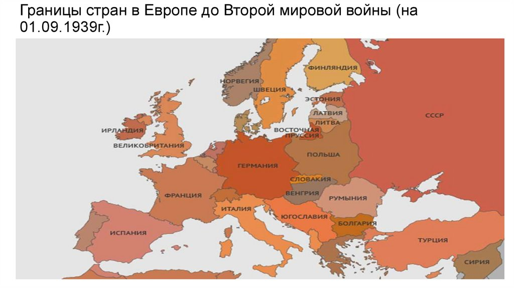
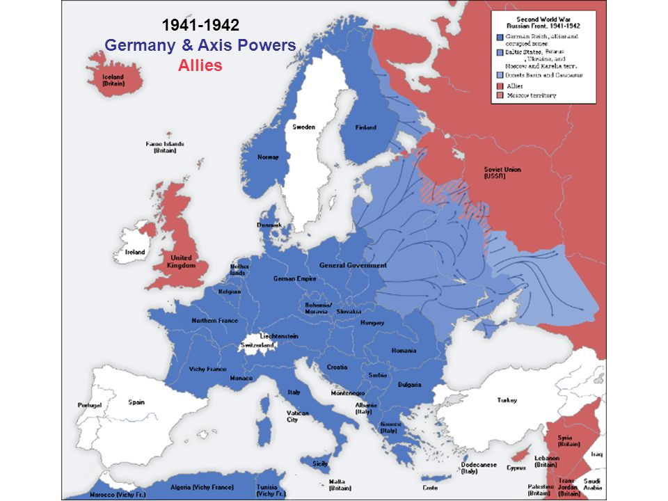
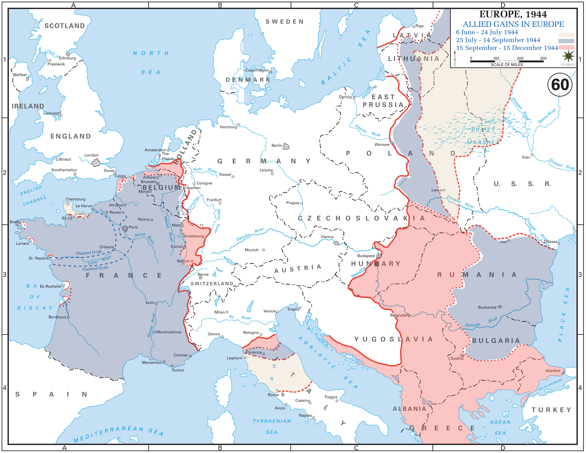
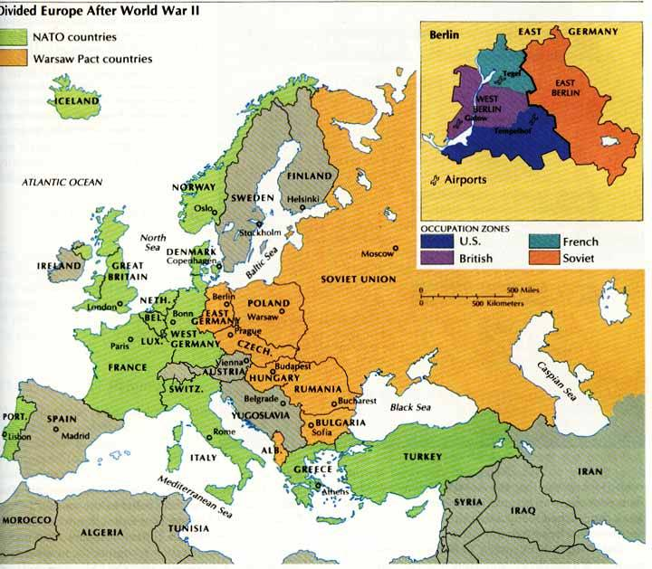

Вторая мировая война это война двух мировых военно-политических коалиций, ставшая крупнейшим вооружённым конфликтом в истории человечества. В ней участвовали 62 государства из 74 существовавших на тот момент.
1939 год (границы до начала войны)
1941-1942 года
1944 год
После Второй Мировой Войны
